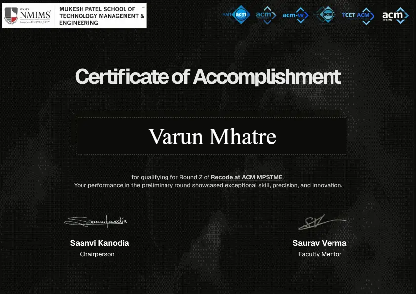

I'm Varun — a B.E. student in AI & Data Science at Terna Engineering College, Navi Mumbai. I build end-to-end analytics dashboards, track meaningful KPIs, and explore data across its full lifecycle.
Varun Ram Mhatre
B.E. AI & Data Science Student
"Python" "Power BI" "SQL"
"Pandas" "DAX" "Tableau"
"ETL" "MySQL" "MongoDB"
8.31 / 10.0 ✓
ecommerce-dashboard/ transport-perf/
job-tracker/ todo-app/
hackathon-analysis/
Work
A selection of dashboards, apps, and data projects — each one solving a real-world problem with data. Built with Power BI, Python, and core web technologies.
A production-grade ML pipeline and interactive Explainable AI (XAI) dashboard built on the IBM Telco dataset. Uses SHAP values to reveal exact service and financial factors driving real-time churn predictions.
End-to-end Power BI report analyzing ₹438K in sales, profit trends, and category-wise performance. Built on a star schema data model with full Power Query transformation.
A full-featured web application with a Kanban board to track and analyze job applications across stages. Includes a dashboard, live search, and dark mode.
Credentials
Achievements
Competing under pressure, building fast, and learning faster — hackathons are where ideas become reality in hours.

ACM MPSTME · NMIMS Mumbai
A lightweight, privacy-first analytics engine designed to capture and visualize user interactions efficiently. Built a minimal JavaScript tracking snippet, real-time analytics dashboard, and funnel-based user journey analysis — along with clickstream heatmapping.